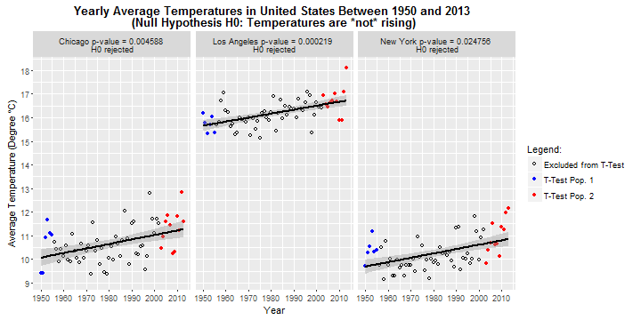

Hypothesis Testing of the Rising of Earth Surface Temperature
Bertrand Rigaldies
Data Science Enthusiast
Climate Change - Is your country warming up?
The Data: Earth Surface Temperature Data
- Source: Kaggle
- Sample data (New York, United States, 2013)
| Date | Country | City | AvgTemperature | AvgTempUncertainty | Lat | Long | |
|---|---|---|---|---|---|---|---|
| 1 | 2013-01-01 | United States | New York | -0.968 | 0.290 | 40.99N | 74.56W |
| 2 | 2013-02-01 | United States | New York | -1.365 | 0.241 | 40.99N | 74.56W |
| 3 | 2013-03-01 | United States | New York | 2.518 | 0.255 | 40.99N | 74.56W |
| 4 | 2013-04-01 | United States | New York | 9.723 | 0.355 | 40.99N | 74.56W |
| 5 | 2013-05-01 | United States | New York | 15.544 | 0.281 | 40.99N | 74.56W |
| 6 | 2013-06-01 | United States | New York | 20.892 | 0.273 | 40.99N | 74.56W |
| 7 | 2013-07-01 | United States | New York | 24.722 | 0.279 | 40.99N | 74.56W |
| 8 | 2013-08-01 | United States | New York | 21.001 | 0.323 | 40.99N | 74.56W |
| 9 | 2013-09-01 | United States | New York | 17.408 | 1.048 | 40.99N | 74.56W |
Temperature Measurement Uncertainty
Temperature measurement uncertainty has decreased over time: For example, for New York, United States, the measurements have improved since the early 1900's. Something to consider when choosing a time period to analyze the data.

Temperature Increase Hypothesis Testing
Hypothesis H0: The temperature in your country has NOT increased.

Example: T.Test result: H0 Rejected for New York, Chicago, and Los Angeles in the United States for the 1950-2013 period. Consequently, these cities have been warming up since the 50's.